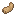

Rabbit's Foot

1Rabbit's Foot
Talisman
Talisman. Whoever carries it dodges more attacks.
- Sells for
 1 emerald
1 emerald- As a talisman
- The carrier dodges more attacks
- A Bundle sends home
- Lucky Charm

1Talisman
Talisman. Whoever carries it dodges more attacks.
1 emerald Farm Pack
Farm Pack